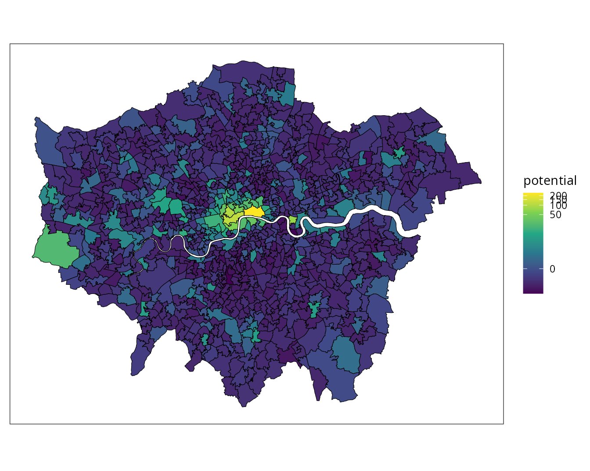

Potential of Human flow (complete graph case)
PotentialInLondon.Rmd
library(HodgePotentialHumanFlow)Dataset: origin-destination matrix in London
We use a trip dataset from home to workplace in 2011 obtained from UK Data Service. The OD matrix denotes the number of commuters aggregated by the middle layer super output area (MSOA) in the 2011 census. The dataset covers the MSOAs in England and Wales. Here, we selected the trips only among MSOAs in Greater London.
Hodge-Kodaira decomposition
Here, we apply Hodge-Kodaira decomposition, in which human flow is uniquely decomposed into a potential-driven (gradient) flow and a curl flow (see our paper for details).
First, we consider the net flow of movement from a given OD matrix : where denotes the transpose of . Matrix is skew-symmetric, that is, , and is possibly described by combinatorial gradient of a potential , given by
Then, we define an optimization problem for potential : According to the combinatorial Hodge theory, the space of net flow is orthogonally decomposed into two subspaces: where is the combinatorial curl operator and is its adjoint operator. Thus, the optimization problem is equivalent to an -projection of onto im(grad), and the minimal norm solution is given by where is the potential at the th location and is the number of locations. It is noted that is negative potential (). This means we observe more trips from a place with lower potential to another with higher potential.
Using this package, the potential is obtained by the following function.
s = HodgePotentialHumanFlow::scalar_potential_on_complete_graph(od)
#> Percentage of gradient flow = 52.71
head(s)
#> zone potential
#> 1 E02000001 244.80671414
#> 2 E02000002 -1.22482197
#> 3 E02000003 -1.15462869
#> 4 E02000004 -1.23397762
#> 5 E02000005 -1.93591048
#> 6 E02000007 0.04170905Plot the obtained potential landscape
The shapefile of the MSOAs is obtained from Office for National Statistics).
suppressWarnings(library(sf))
#> Linking to GEOS 3.13.1, GDAL 3.11.4, PROJ 9.6.0; sf_use_s2() is TRUE
shape = st_read("london.geojson")
#> Reading layer `MSOA_in_London' from data source
#> `/home/aoki/Dropbox/00CurrentProject/HodgePotentialHumanFlow/vignettes/london.geojson'
#> using driver `GeoJSON'
#> Simple feature collection with 983 features and 6 fields
#> Geometry type: MULTIPOLYGON
#> Dimension: XY
#> Bounding box: xmin: 503569.4 ymin: 155850.7 xmax: 561959.4 ymax: 200934.3
#> Projected CRS: OSGB36 / British National Grid
merged = merge(shape, s, all.x=T, by.x="msoa11cd", by.y="zone")
head(merged)
#> Simple feature collection with 6 features and 7 fields
#> Geometry type: MULTIPOLYGON
#> Dimension: XY
#> Bounding box: xmin: 530968.5 ymin: 180510.9 xmax: 551945.7 ymax: 191139.3
#> Projected CRS: OSGB36 / British National Grid
#> msoa11cd objectid msoa11nm msoa11nmw
#> 1 E02000001 1 City of London 001 City of London 001
#> 2 E02000002 2 Barking and Dagenham 001 Barking and Dagenham 001
#> 3 E02000003 3 Barking and Dagenham 002 Barking and Dagenham 002
#> 4 E02000004 4 Barking and Dagenham 003 Barking and Dagenham 003
#> 5 E02000005 5 Barking and Dagenham 004 Barking and Dagenham 004
#> 6 E02000007 6 Barking and Dagenham 006 Barking and Dagenham 006
#> st_areashape st_lengthshape potential geometry
#> 1 2897837 9297.742 244.80671414 MULTIPOLYGON (((532155.5 18...
#> 2 2161565 8307.072 -1.22482197 MULTIPOLYGON (((548879.6 19...
#> 3 2141516 9359.992 -1.15462869 MULTIPOLYGON (((548960.4 18...
#> 4 2492948 8476.617 -1.23397762 MULTIPOLYGON (((551551.9 18...
#> 5 1187953 7322.466 -1.93591048 MULTIPOLYGON (((549238.9 18...
#> 6 1735998 7071.096 0.04170905 MULTIPOLYGON (((549420.5 18...Plot the obtained potential landscape using sf
package.
library(ggplot2)
library(viridis)
#> Loading required package: viridisLite
library(scales)
#>
#> Attaching package: 'scales'
#> The following object is masked from 'package:viridis':
#>
#> viridis_pal
ggplot(data=merged, aes(fill=potential)) + geom_sf(color="black", lwd=0.2) + scale_fill_viridis_c(option="viridis", trans=modulus_trans(0)) + theme_bw() + theme(axis.title = element_blank(), axis.ticks = element_blank(), axis.text = element_blank(),panel.grid.major = element_line(colour = "transparent"))